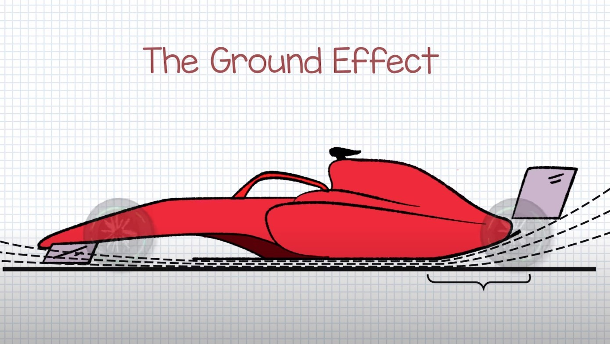
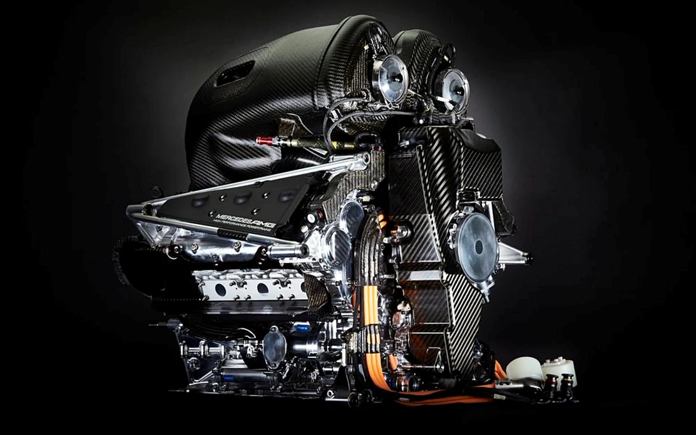
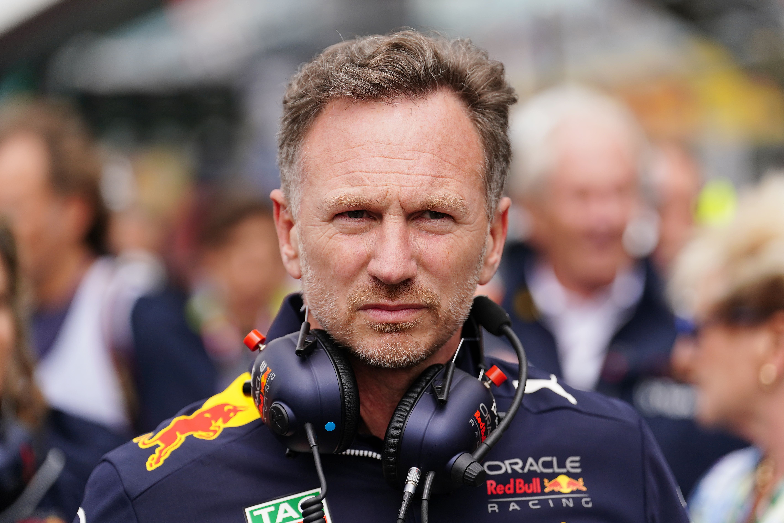
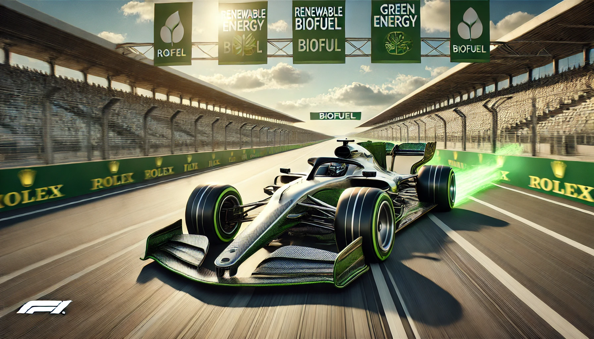

A 2022-től érvényes Forma-1-es autó szabályrendszer a sportág egyik legjelentősebb változását hozta. Az új szabályok célja, hogy izgalmasabbá, versenyképesebbé és fenntarthatóbbá tegyék a versenyeket, miközben csökkentik a csapatok költségeit és elősegítik a költséghatékony fejlesztéseket. Az alábbiakban hat fejezetre bontva részletes elemzést adok a legfontosabb változásokról és azok hatásairól.
Aerodinamikai változások és a kocsi leszorítóereje
 A 2022-es szabályok egyik legfontosabb eleme az autók aerodinamikai kialakításának teljes átalakítása. A legjelentősebb változtatás, hogy a korábbi "légcsatornák" és "szárnyak" nagy része eltűnt, helyette a csapatoknak úgynevezett ground effect (földi hatás) aerodinamikai elvet kell alkalmazniuk. Az új szabályok célja, hogy az autók hatékonyabban használják ki az alájuk áramló levegőt, ami lehetővé teszi a versenyzők számára, hogy sokkal közelebb maradjanak egymáshoz anélkül, hogy a levegő turbulenciája miatt veszítsenek sebességükből.
A legfontosabb változás az új, nagyobb, alacsonyabb profilú első és hátsó szárnyak, valamint az oldalsó légterelők eltűnése. Az új kocsi aerodinamikai koncepciója erőteljesebben épít a földön áramló levegőre, azaz a szívó hatásra, amit az autó alján lévő Venturi-csatornák hoznak létre. Ennek célja, hogy növelje az autók közötti versenyzés lehetőségét, csökkentve a levegő torzulását, amely eddig nehezítette a követésüket.
Kerekek és gumik
A 2022-es szezonra a Forma-1-es autók kerekének mérete is változott. A korábbi 13 colos abroncsok
helyett 18
colos kerekek kerültek bevezetésre, és ezek már szélesebb profillal rendelkeznek. Az új, alacsonyabb
profilú
gumik célja, hogy javítsák a versenyek izgalmát, mivel az autók jobban reagálnak a különböző
körülményekre,
például a pálya hőmérsékletére, miközben csökkentik az abroncsok felmelegedésének idejét.
Ezenkívül a 2022-es gumik tervezésénél a Pirelli figyelembe vette a csapatok visszajelzéseit, hogy az abroncsok jobban bírják a nagy sebességű kanyarokat és a hosszú távú megterheléseket, miközben a gumik élettartamát is sikerült meghosszabbítani. Az új abroncsok fokozott stabilitást és megbízhatóságot biztosítanak, de a versenyzőknek is nagyobb ügyességgel kell bánniuk a gumik állapotával a versenyek alatt.
Motortechnológia és üzemanyag-hatékonyság
 A 2022-es szabályok nemcsak az aerodinamikát, hanem a motortechnológiát is érintették. A Forma-1 továbbra is a hibrid erőforrásokkal dolgozik, de az új szabályok célja a fenntarthatóság és a költségcsökkentés előmozdítása. A motorok továbbra is 1.6 literes V6-os turbómotorok maradnak, de az energia-visszanyerő rendszerek (ERS) és az üzemanyag-hatékonyság nagyobb szerepet kapott.
A szabályozás arra ösztönzi a csapatokat, hogy a lehető leghatékonyabb módon használják fel az üzemanyagot, valamint csökkentsék az emissziót. Az új előírások hatására a motorok megbízhatóságára és hosszú távú teljesítményére is nagyobb hangsúlyt helyeztek, miközben a csapatok számára adottak a költséghatékony megoldások, hogy a szponzorok és a közönség számára is fenntarthatóbbá váljon a Forma-1.
Költségvetési plafon és pénzügyi szabályozás
 Az új szabályok egyik legnagyobb változása a pénzügyi területen történt, ahol bevezették a költségvetési plafont, hogy csökkentsék a csapatok közötti pénzügyi különbségeket. A szabályok szerint minden csapat számára éves költségvetési plafont határoztak meg, amelyet nem léphetnek túl a fejlesztések és a működés terén. Az 2022-es költségvetési plafon 140 millió dollár körül alakult, és 2023-ra ezt további csökkentették.
Ez a szabályozás igyekszik biztosítani, hogy a kisebb csapatok is versenyképesek maradjanak, míg a nagyobb csapatok számára is teret ad a fenntarthatóságra és a hosszú távú fejlődésre. A költségplafon betartásának ellenőrzése szigorúbbá vált, és a szabályok megszegése súlyos büntetéseket vonhat maga után, beleértve a pénzbírságokat és a versenyekből való kizárást is.
Biztonság és a versenyzői védelem
 A Forma-1 történelme során mindig fontos szerepet kapott a versenyzők biztonsága, és a 2022-es
szabályok
ezen a
területen sem hoztak visszalépést. A kocsik továbbra is a legmodernebb biztonsági fejlesztésekkel
rendelkeznek,
de a szabályozás előírta, hogy az autók még ellenállóbbak legyenek a balesetekkel szemben.
A Forma-1 történelme során mindig fontos szerepet kapott a versenyzők biztonsága, és a 2022-es
szabályok
ezen a
területen sem hoztak visszalépést. A kocsik továbbra is a legmodernebb biztonsági fejlesztésekkel
rendelkeznek,
de a szabályozás előírta, hogy az autók még ellenállóbbak legyenek a balesetekkel szemben.
Az új kocsik a Halo rendszerre építenek, amely a fej védelmét szolgálja, de a 2022-es szabályok megkövetelték a monocoque szerkezetek szilárdságának további növelését, valamint a kocsik frontális ütközés elleni védelmét. Ezen kívül a versenyzői ülések, biztonsági övek és a pilóta védelmi rendszerei is továbbfejlesztésre kerültek a maximális védettség biztosítása érdekében.
Fenntarthatóság és környezetvédelem
 A Forma-1 célja, hogy 2030-ra karbonsemlegessé váljon, és az új szabályrendszer ennek elérésére is irányul. A 2022-es szezonra előírták, hogy az autók üzemanyaga 100%-ban szintetikus üzemanyagra épüljön, és fokozatosan csökkentsék az autók által kibocsátott káros anyagok mennyiségét. Az új szabályok középpontjában a környezeti hatások minimalizálása és a fenntartható fejlődés állnak, melyek a sportág jövőjére is nagy hatással lehetnek.
Ez a változás nemcsak a motorok és az üzemanyagok terén hozott változást, hanem a versenyek lebonyolításában is, hiszen a csapatok és a szervezők környezettudatosabb megoldásokra törekednek, például a logisztikai költségek csökkentésére és a versenyek karbonlábnyomának minimalizálására.
Összegzés
A 2022-es Forma-1-es szabályok alapvető változásokat hoztak a sportágban. Az új autók aerodinamikai kialakítása, a nagyobb kerekek, a költségvetési plafon, a megnövelt biztonsági előírások és a fenntarthatóságra való fókuszálás mind hozzájárulnak a versenyek izgalmasabbá, fenntarthatóbbá és igazságosabbá válásához. A sportág jövőjére gyakorolt hatása pedig várhatóan hosszú távon is pozitívan fogja befolyásolni a Forma-1 fejlődését.